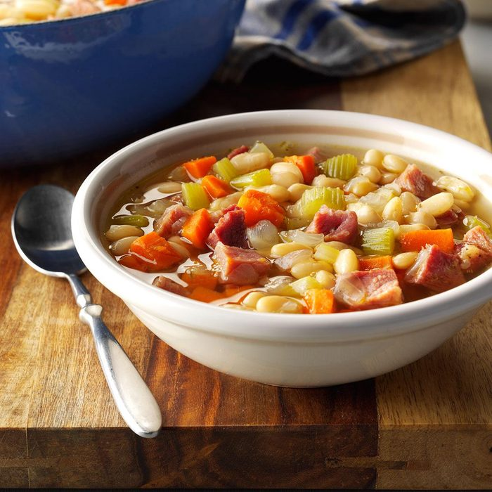

Neighborhood Bean Soup

Total Time
Prep: 30 minutes +standing
Cook: 21/4 hours
Servings
10 servings (21/2 quarts)
Ingredients
- 2 cups dried great northern beans
- 5 cups chicken broth
- 3 cups water
- 1 meaty ham bone or 2 smoked ham hocks
- 2 to 3 tablespoons chicken bouillon granules
- 1 teaspoon dried thyme
- 1/2 teaspoon dried marjoram
- 1/2 teaspoon pepper
- 1/4 teaspoon rubbed sage
- 1/4 teaspoon dried savory
- 2 medium onions, chopped
- 3 medium carrots, chopped
- 3 celery ribs, chopped
- 1 tablespoon canola oil
Directions
- Sort beans and rinse with cold water. Place beans in a Dutch oven; add water to cover by 2 in. Bring to
a
boil; boil for 2 minutes. Remove from the heat; cover and let soak for 1-4 hours or until beans are
softened.
- Drain and rinse beans, discarding liquid. Return beans to pan; add broth, 3 cups water, ham bone,
bouillon
and seasonings; bring to a boil. Reduce heat; cover and simmer for 1-1/2 hours.
- Meanwhile, in a large skillet, saute the onions, carrots and celery in oil until tender; add to soup.
Cover
and simmer 45-60 minutes longer or until beans are tender.
- Remove ham bone; cool slightly. Skim fat from soup. Remove meat from bone and cut into chunks; return to
soup. Discard bone.
Nutrition Facts
1 cup: 203 calories, 5g fat (1g saturated fat), 11mg cholesterol, 1001mg sodium, 29g carbohydrate (6g sugars,
9g
fiber), 13g protein.